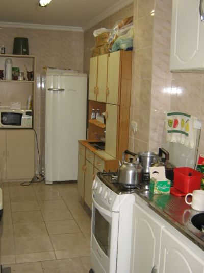

A Tecnodata possui uma cozinha bem equipada, que pode ser utilizada para fazer lanches rápidos, armazenar comida na geladeira, esquentar o almoço e lavar a louça. Aos funcionários que realizam suas refeições no ambiente da empresa é pedido que tragam seus próprios talheres, pois a cozinha não os disponibiliza.
Todos os utensílios devem ser lavados e guardados após o uso, mantendo o ambiente organizado e limpo e possibilitando que outros funcionários possam usar os equipamentos.
Após as 08:00 da manhã não é permitido tomar café na cozinha.
O uso para almoço é das 11:30 às 13:30, após este horário a cozinha tem que ser utilizada para atender as necessidades da empresa.
Das 8:00 até 12:00 e a partir das 14:00 a cozinha fica fechada.
Foto da Cozinha:
